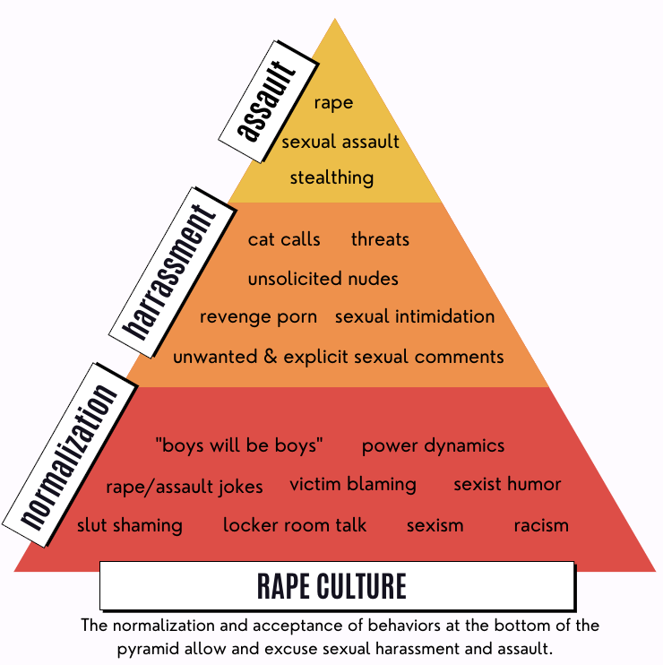

Rape Culture
While awareness surrounding sexual harassment and assault has improved, rape culture is still a huge issue that perpetuates the toxic notion that rape and sexual assault are normal aspects of life and society. In simple terms, rape culture is the societal normalization of sexualized violence. Some aspects of rape culture might include victim blaming, sexual marks, and rape jokes. In rape culture, we assume sexual violence is inevitable because of how frequently it occurs. Hence, it is incredibly important that we change this expression of values and our mindset.
What is Victim Blaming?
Victim blaming is pretty straightforward: it’s when people and the media place blame on a victim of sexual violence. Although it can be as explicit as saying “It was their fault they got raped,” victim blaming comes in many different forms. It is important to be aware of what victim blaming is and why, as a society, we are taught to blame the victim.
The “Just World Hypothesis”
One hypothesis for why victim blaming occurs is called the “Just World Hypothesis”. This hypothesis argues that victim blaming occurs because people are inclined to believe that everyone deserves what happens to them. In other words, it assumes that victims play a role in their assault - which is never true.
Rape Culture the Media
Sadly, TV shows, films, and even music often see themselves as exempt from addressing rape and sexual assault when they write it into their scripts. Not only do they not address it, but usually the character that committed sexual violence gets off the hook and at times, turns into the protagonist. It is important to be able to identify that what is modeled in the media is perpetuating rape culture. Here are some examples that you might have missed:
- ✿ Bridgerton (Episode 6) - at the end of the episode, Daphne and Sebastian start having sex. However, instead of letting Sebastian pull out (since he does not want kids), Daphne stays on top of him until he ejaculates inside her, something that he did not consent to. The worst part is, the show is structured in a way where the audience is supposed to side with Daphne. In reality, however, she raped him.
- ✿ Blurred Lines by Robin Thicke - this song is essentially saying that there is a blurry line between sexual assault and consensual sexual activity. There isn’t! The song has several problematic lyrics, however, one of the worst ones is the coercive “I know you want it ... Just let me liberate you”.
- ✿ Sixteen Candles - this movie has many problematic moments. One really problematic line is when Jake gets annoyed dealing with his drunk girlfriend Caroline and says, “I could violate her ten different ways if I wanted to.” Another moment is when drunk Caroline is handed over to Ted, who is completely sober. The next morning the two of them wake up and Caroline doesn’t remember having sex with Ted. That’s rape.
What does rape culture look like in real life?
- ✿ “She asked for it”
- ✿ “Boys will be boys!”
- ✿ Sexually explicit jokes
- ✿ Tolerating or downplaying sexual harassment
- ✿ Inflating false rape report statistics
- ✿ Shaming a victims outfit, mental health, motives, and sexual history
- ✿ Refusing to take sexual assault or rape allegations seriously
- ✿ Gender norms: Manhood → should be dominant and sexually aggressive, Womanhood → as submissive and sexually passive, Pressure on men to “get girls”, Pressure on women to act and dress feminine, Assuming only promiscuous women get raped, Assuming men don't get raped or only “weak” men get raped, Teaching women to avoid getting raped
Rape jokes are never funny
Especially amongst young people, rape jokes are frequently made. There are probably a million reasons why they are problematic, but some key reasons include:
- ✿ Joking about rape downplays the seriousness of the topic
- ✿ It makes victims feel like they are to blame
- ✿ They perpetuate the idea that respecting someone choice to consent or not to consent is a joke
Remember that when you find rape jokes funny you are essentially finding the idea of taking away someone’s consent and autonomy over their body as funny. It’s not funny. Stop laughing and call your friends out when they make jokes like these.
Know the facts
Rape culture tends to spread a lot of misinformation surrounding rape and sexual assault. Here are some hard facts and statistics to help you identify what’s true and what’s not:
- ✿ Only 2-10% of accusations are false. So maybe we should stop blaming the victim and believe survivors instead.
- ✿ 8/10 victims of rape knew the perpetrator before the assault
- ✿ Roughly 1 in 10 women are raped by an intimate partner in her lifetime, including completed forced penetration, attempted forced penetration, or alcohol/drug-facilitated completed penetration.
- ✿ 40 percent of gay men and 47 percent of bisexual men have experienced sexual violence other than rape
- ✿ 47% of transgender people are sexually assaulted during their lifetimes
Changing the Dialogue
One of the most important things we can do to combat rape culture is to change the way that we talk about rape and sexual assault.
Phrasing matters
In this Ted Talk, Jackson Katz explains that the way we phrase sentences surrounding rape can actually perpetuate rape culture further. He states, “I want to share with you this exercise that illustrates on the sentence-structure level how the way that we think, literally the way that we use language, conspires to keep our attention off of [perpetrators/rapists].” To watch the video, click the link here.
Watch tv shows/movies that grapple with rape culture correctly
As mentioned before, the media often participates in the perpetuation of rape culture. However, there are some good examples of tv shows and movies that have handled well. Read thisarticlefor some good examples.
Identify rape culture in your everyday life
Similar to rape jokes, there are many things that we say (sometimes subconsciously) that actually partake in rape culture. Read this articlefor examples of everyday language to avoid or call people out on if they use it.
Ways to dismantle rape culture
- ✿ Avoid using objectifying or degrading language against women
- ✿ Speak out if you hear someone making an offensive joke or trivializing rape
- ✿ If a friend has been raped then listen to them, be supportive, and take them seriously
- ✿ Think about the media's messages about women, men, nonbinary folks, people in the lgbtq+ community, relationships, and violence
- ✿ Be respectful of people's physical space
- ✿ Let survivors know it is not their fault
- ✿ Hold abusers accountable for their actions: Do not make excuses for people or blame the victim, alcohol, or drugs for their behavior
- ✿ Communicate with sexual partners CONSENT
- ✿ Define your own manhood, womanhood, etc. Do NOT let stereotypes shape your actions
- ✿ Don’t be an active bystander
